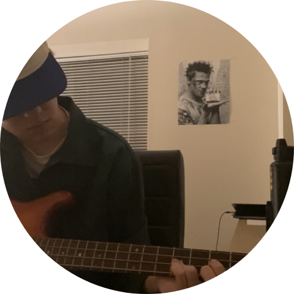
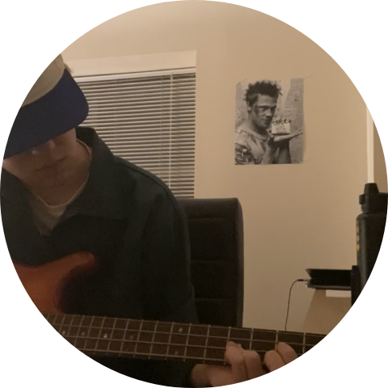

I love music
Hate to say it again, but ever since I was little I was fascinated with music. As with every other. Kid, I grew up listening to stuff my parents listened to in the car, which is why I am the way I am with music. My parents loved rock, so I grew up listening to bands like Pearl Jam, Guns n' Roses, Pink Floyd; you get the picture. Coming into college, I always wanted to learn how to play an instrument. Thanks to my roommate, Mike (a guitarist), he needed a bassist. So, I did what any good roommate would do, and I learned the bass. Thankfully, we already had a friend who had multiple basses, and could show me the ropes. I fell in love. It was so freeing to be able to hear a song, and think to yourself: “Hey, I can play that!” Or “Hey, I could learn to play that!”. I still have much more to learn, but im very happy with my progress so far. Some bands/musicians I enjoy are: Sonic Youth, The Smiths, Sweet Trip, Aphex Twin, Joy Division, Alex G, Elliot Smith; the list goes on and on. I love hearing new artists for the first time, so if anyone reading this has any suggestions, feel free to contact me!